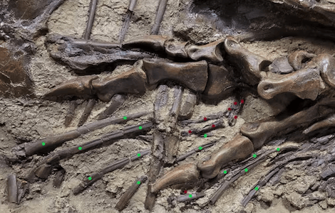
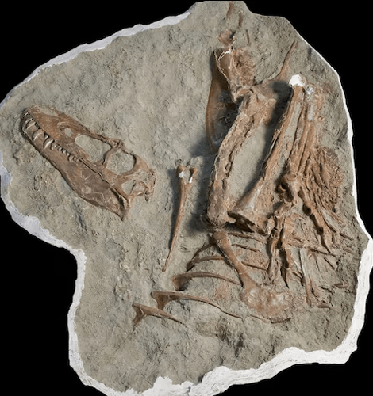

NATIONAL GEOGRAPHIC
Dino nuggets ... for dinosaurs A young tyrannosaur’s last meal gives new insight
SCIENCE
- 
- 
Juvenile tyrannosaurs selected their meals from the Cretaceous version of the kid’s menu, newly analyzed fossils show. While adult “tyrant lizards” were bone crushers, capable of hunting large prey and reducing carcasses to little more than splinters, paleontologists have long wondered exactly what the younger tyrannosaurs were munching on.
Now, gut contents found within a Gorgosaurus skeleton reveal that the adolescent tyrants bolted down choice cuts of smaller prey a key find that is helping paleontologists understand the broader food webs of prehistoric North America.
Known to paleontologists since 1914, Gorgosaurus lived about 75 million years ago among the floodplains of ancient Alberta, Canada. Experts have unearthed numerous fossils of the svelte tyrannosaur, including some relatively complete skeletons, with the adults reaching more than 26 feet in length and weighing more than two tons in life.
The new specimen, described today in a study in Science Advances, was about 13 percent of its adult body mass, a dinosaur that perished before its big growth spurt. “Gorgosaurus may not be as popular as the iconic T. rex, but we now have two very well-preserved Gorgosaurus juveniles from Alberta,” says University of Calgary paleontologist and study author Darla Zelenitsky.
The skeleton was discovered in 2009 among the colorful, banded rocks of Dinosaur Provincial Park. “At the time, the discoverer and collectors did not realize there were prey items preserved inside its stomach,” Zelenitsky says. As the bones were carefully freed from the encasing rock, experts were surprised to find scraps of the dinosaur’s last meal. “It was only during cleaning in 2010 when the prey’s small toe bones were found poking through the ribs of the tyrannosaur,” she says.
The bones found inside the Gorgosaurus body cavity belonged to juvenile dinosaurs of another species. The young meat-eater had chomped off the hind legs of two parrot-like dinosaurs called caenagnathids before perishing itself. The details the Gorgosaurus’s last meal provide evidence for a hypothesis that paleontologists have long suspected: Juvenile and adult tyrannosaurs relied upon different food sources, the same species behaving differently as the dinosaur grew up.
“This is about as close to definitive proof as we could get for a niche shift with growing tyrannosaurs,” says University of New Mexico paleontologist Kat Schroeder, who was not involved in the new study.
Analyses of the caenagnathid bones in the tyrannosaur gut contents reveal that both individuals were less than a year old. Young dinosaurs were especially vulnerable to carnivores, which helps explain the rarity of infant dinosaurs in the fossil record. The little caenagnathids would have been easy pickings for adolescent tyrannosaurs honing their hunting skills.
“This fossil provides the first direct evidence that juvenile Gorgosaurus were still feeding on relatively small prey compared to their adult counterparts,” Zelenitsky says, “and probably not jumping into a herd of megaherbivores to feast.”
The caenagnathid bones also provide a glimpse at tyrannosaur feeding behavior. The only bones ingested were from the prey animals’ hind legs, which would have carried a large amount of muscle—the equivalents of the thigh and drumsticks of poultry. The young Gorgosaurus seems to have preferentially eaten these meatier parts, suggesting the dinosaur hunted its prey for the protein-rich cuts rather than scavenging scraps from a carcass. “We’ve never had evidence for active predation among juvenile tyrannosaurs before,” Schroeder says.
The Gorgosaurus also swallowed the leg parts whole, something that is seen in some modern predators as well. “Juvenile Gorgosaurus may have fed similarly to how some living crocodylians or birds do, swallowing large chunks including the bones rather than selectively feeding on muscle,” says Auburn University paleontologist Thomas Cullen, who was not involved in the new study.
Despite being a single specimen, the fossil provides evidence for a broader pattern among dinosaurs that’s perplexed paleontologists for years. Prehistoric habitats in North America that were prowled by large tyrannosaurs such as Gorgosaurus and T. rex generally lacked medium-sized carnivorous species living beside them. “We don’t see that absence of medium-sized predators in other habitats that hosted large tyrannosaurs, in Cretaceous Asia or other assemblages with large carnivorous dinosaurs,” Cullen says. How Gorgosaurus and related tyrannosaurs grew up in North America seems unique.
Splitting up available prey based on body size likely explains the difference. “ Paleontologists have long hypothesized that changes in body size and proportions in tyrannosaurs were related to shifts in diet or feeding behavior,” Zelenitsky says, especially among T. rex. The juveniles have narrower and shallower jaws compared to adults of their species, meaning they had to grow into their impressive bites.
Comments :
- john Very good
- john Very good
Leave a Reply
Your email address will not be published. Required fields are marked*
Related posts:
-
 How to plan the ultimate campervanning adventure through Australia
How to plan the ultimate campervanning adventure through AustraliaAs road trip destinations go, there are few better places than Australia. Nature seems to flow in through the windows in eucalyptus-scented gusts as you drive, while the wonders of the great red continent unfurl beyond the windscreen.
View article -
 Follow in the footsteps of monks and literary giants on the North York Moors
Follow in the footsteps of monks and literary giants on the North York MoorsDriving into the North York Moors National Park is a bit like delving into the pages of The Secret Garden it was indeed these heather-clothed moorlands that inspired Frances Hodgson Burnett’s 1911 novel. Granted
View article -
 How locals are protecting the wildlife of the Queen Elizabeth Conservation Area
How locals are protecting the wildlife of the Queen Elizabeth Conservation AreaPelicans preen and glide. Jacana birds, precise as ballerinas, point their improbably elongated toes. Pied kingfishers flit in and out of their lakeside nest holes, saddle billed storks patrol the grassy banks and skimmers
View article